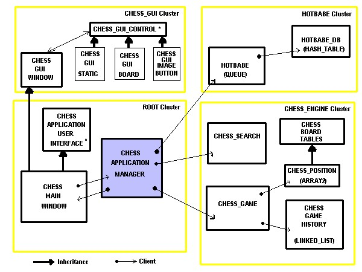

Cluster Overview
Cluster Overview

There are four clusters that comprise Hotbabe Chess. The root class
for this project is CHESS_APPLICATION_MANAGER. This is where all the
windows events are handled and where all the top level logic for this game happens.
Root Cluster
The root cluster is mainly concerned with managing the user interface
and all the logic associated with handling the user interactions.
- The root cluster has utility classes for saving/load chess games.
(CHESS_GAME_FILE)
- The root cluster has 2 modal dialogs: New game dialog (NEW_GAME_DIALOG)
and Change Nickname Dialog (NICKNAME_DIALOG).
- The root cluster has a utility class for converting hotbabe text messages
into a format that can be displayed in the chat output window (CHAT_TEXT_UTILITIES)
- CHESS_APPLICATION_MANAGER is where the top-level game interaction is managed.
- CHESS_MAIN_WINDOW is the actual WEL window that contains all the graphical
control.
Chess Engine Cluster
The Chess Engine is a collection of classes for playing computer chess. The
primary class is CHESS_SEARCH, this answers the question "What move should I make?"
The class CHESS_GAME is a utility class that hold a current chess game, and all
the previous moves are stored in a CHESS_GAME_HISTORY.
A very important part of computer chess is producing valid chess moves (CHESS_MOVE)
quickly. This is accomplished by CHESS_BOARD_TABLES.
A chess position (class CHESS_POSITION), is a efficient representation of
a chess board and all the pieces, and any additional state information (CHESS_STATE).
Chess GUI Cluster
Several custom controls have been created for this application. All these
controls inherit from CHESS_GUI_CONTROL.
- CHESS_GUI_CONTROL: Parent class for all controls
- CHESS_GUI_BOARD: This is the chess board.
- CHESS_GUI_CHAT_MENU: This is the chess command menu.
- CHESS_GUI_CHAT_OUTPUT: This is the chat output window.
- CHESS_GUI_HISTORY: This is the list of chess moves.
- CHESS_GUI_HISTORY_SCROLL: This is a scroll bar for scrolling thru the
history moves.
- CHESS_GUI_IMAGE_BUTTON: This is an image button.
- CHESS_GUI_STATIC: This is a fancy static text control.
- CHESS_GUI_VIDEO: This is webcam control for playing video clips.
- CHESS_GUI_VIDEO_DEVICE: This is a WEX_DIGITAL_VIDEO_DEVICE.
- CHESS_GUI_WINDOW: This is the main window parent class.
Hotbabe Cluster
This cluster controls the hotbabe behavior. It manages a database of all the
hotbabe text messages and video clips (HOTBABE_DB). Hotbabe is event driven, and
every event HOTBABE responds to is a HOTBABE_EVENT. Our root cluster interfaces
with the HOTBABE class only.
| Previous |
|
Next |
| Compiling Hotbabe Chess |
|
Root Cluster |
| |
|
|
|
Hotbabe Chess (C) 2003 |
|